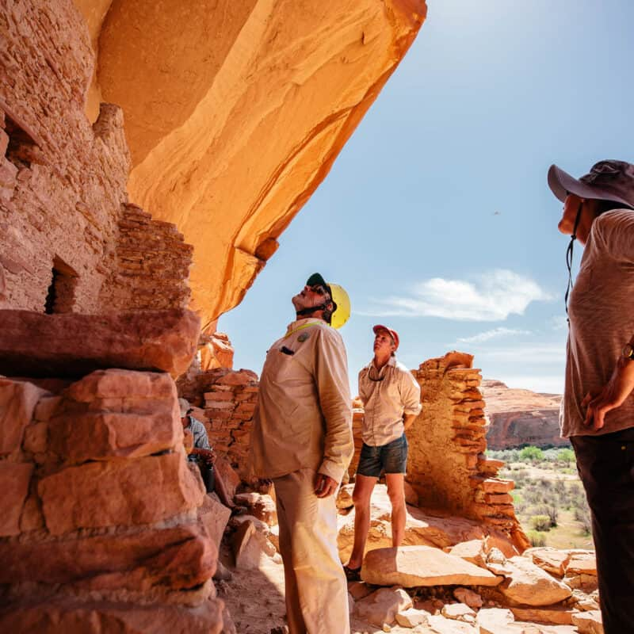
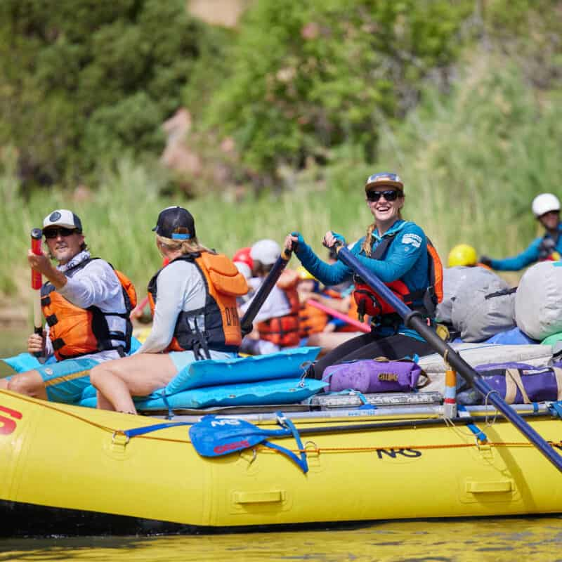
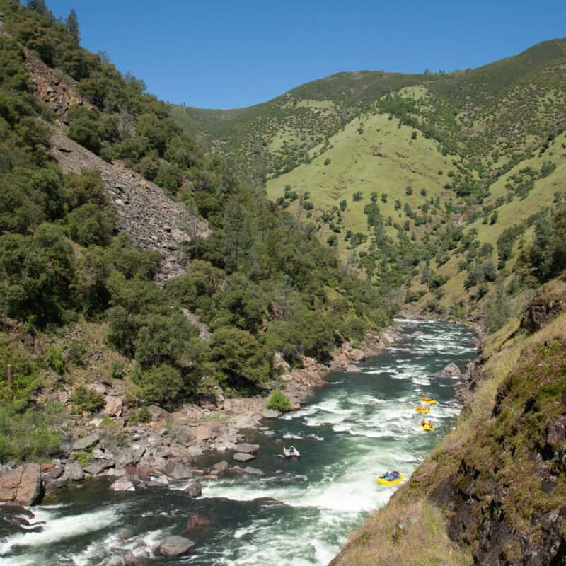

The Aqua Experience
In the hearth of the rugged wilderness, Aqua Adventures as born from the passion and adventurous spirit of its founder, Amelia Anderson.
With a love for the untamed rivers and a deep-rooted desire to share these breathtaking experiences with others, Amelia embarked on a remarkable journey.
In the early 1980s, while balancing her life as a marine biologist, Amelia found herself drawn to the mesmerizing allure of river rafting. Armed with a few inflatable rafts and a heart full of determination, she began exploring the remote waterways of the Pacific Northwest. As she ventured deeper into the canyons, her vision became clear - she wanted to bring the wonders of these wild rivers to those who shared her sense of adventure.
By 1985, what started as personal excursions transformed into professional river trips, and Aqua Adventures was officially born. With each journey, Amelia's dream of introducing people to the untamed beauty of the world's rivers became a reality. Her passion was infectious, and guests couldn't resist the call of Aqua Adventures' white-water expeditions.
When she peacefully passed away in 2020, Amelia left behind a legacy that continues to thrive. Aqua Adventures stands today as one of the premier river outfitting companies in the industry. Yet, even now, decades later, our company's essence remains rooted in family values and a commitment to providing unforgettable experiences.
Amelia's children, Sarah and Ben Anderson, proudly carry the torch forward, ensuring that Aqua Adventures maintains its original spirit of exploration and preservation of the wilderness. Alongside a dedicated team of guides and staff, some of whom have been with us for years, we remain true to our core mission - to share the wonder of nature's wildest rivers and create lasting memories for adventurers from all walks of life.
THE AQUA ADVENTURES EDGE
We recognize that there are numerous choices when it comes to selecting your ultimate adventure getaway. Yet, there's an undeniable reason why an astonishing 80% of our adventurers return year after year or were personally recommended by a fellow Aqua Adventures explorer.
EXPERTISE
With over five decades of expertise under our belts, we're proud to set industry standards, from training and safety to environmental stewardship and sustainable travel practices. Our dedication to the environment goes hand in hand with our promise to provide you with an unforgettable adventure that respects and cherishes the natural world.
EXTENSIVE PERMIT COLLECTION
With over five decades of expertise under our belts, we're proud to set industry standards, from training and safety to environmental stewardship and sustainable travel practices. Our dedication to the environment goes hand in hand with our promise to provide you with an unforgettable adventure that respects and cherishes the natural world.
FAMILY CONTINUITY:
The Anderson legacy lives on, as Amelia's children, Sarah and Ben Anderson, lead the way, preserving their mother's vision and passion for exploration. With a core team of experienced guides and staff who share our deep love for the outdoors, Aqua Adventures continues to be a family-owned and operated company, ensuring every trip is a personalized, remarkable adventure.
OUR MISSION
At Aqua Adventures, our mission is to ignite the spirit of adventure within everyone who seeks the thrill of exploring untamed rivers and experiencing the great outdoors.
We believe in creating lasting memories that connect people to the wonders of nature.
OUR FOUNDATION OF VALUES
Guiding the Way:
Aqua Adventures sets the bar high in all aspects of our business, striving to be a trailblazer in the industry. We're committed to turning words into actions.
Safety at the Core:
While we're all about having fun and creating carefree memories, we also expertly manage both the expected and unforeseen risks that come with outdoor adventures. Our rigorous risk management practices instill confidence and trust in both our guests and our dedicated staff.
Caring Community:
Our dedication runs deep for our colleagues, travelers, and the broader outdoor community. We're driven to maintain spaces that are safe, inclusive, and open to all, ensuring everyone feels welcome.
Unmatched Hospitality:
We exude professionalism in every aspect of our operation, consistently surpassing the expectations of our travelers. Whether it's the friendly voice on the phone or our skilled guides in the field, we provide a premier experience.
Access for Everyone:
Aqua Adventures opens the door to some of the world's most iconic national parks, unspoiled wilderness areas, and hidden gems. Our aim is to ignite the spirit of environmental stewardship among diverse backgrounds, granting unique access to inspire generations.
Continuous Evolution:
We're a company that believes in constant growth and improvement. Your feedback matters to us, and we're committed to taking meaningful actions to enhance your experiences with us.
Passion for the Wild:
Our unwavering belief is that the wild places we explore are life-changing. Our collective love for the outdoors fuels every decision we make.
Giving Back:
We're committed to making a meaningful impact on the communities and environments where we live and work, leaving a positive mark on the places we cherish.